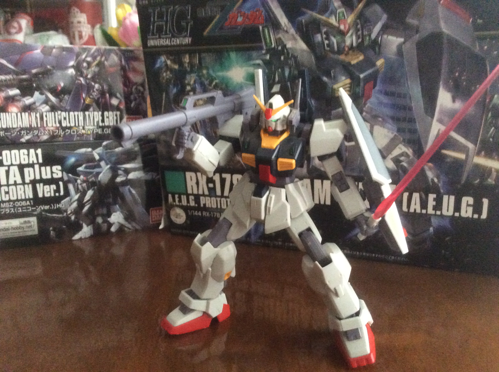

Today's review will be on my favorite model among my small HG collection, the MK II Gundam.
While it has a simplistic aesthetic, this remake of an old model shows that sometimes simple is best.
You can immediately see that the MK 2 doesn’t have a lot going on. But on the other hand, this makes for a good first build for any newcomers to the hobby. It’s simple design and colour scheme makes it easy to see the small details and smooth design of the machine. Since it only has three weapons and a shield, you can easily display them together with the machine and it doesn’t limit the range of poses that it can do.
There’s no excessive amounts of armour pieces that get in the way of assembly or posing. The newer model leg joints also allow you to maneuver the leg parts without having to break the part lining as well. Assembly is fairly easy and while some of the joints are a bit stiff to move, it doesn’t require so much force that you might break the parts. The solid connections that these stiff joints make also prevent parts from just popping and falling off, unlike the unfortunate HG Crossbone Gundam.
All in all, the MK II is an easy and beginner friendly model to build with a pleasant design despite its simplicity.